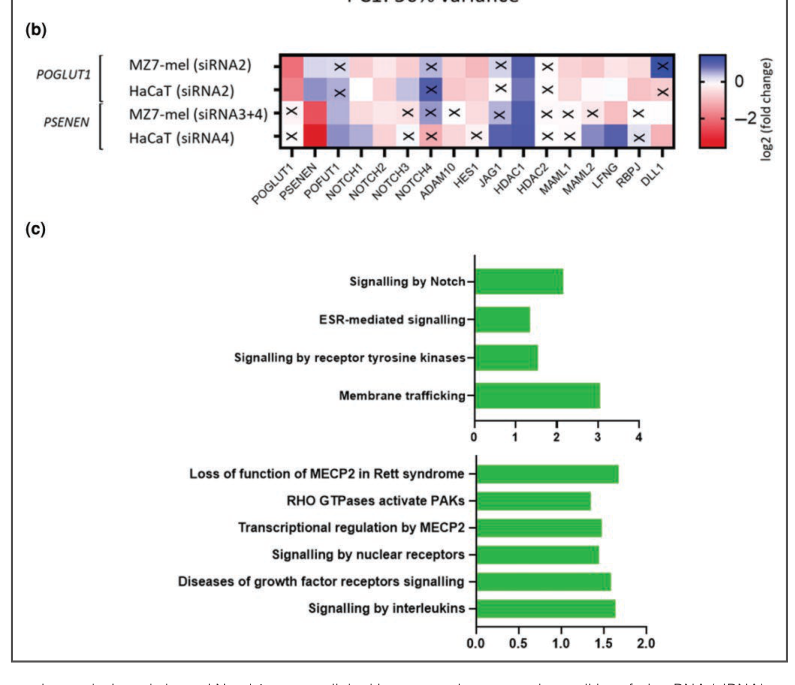

Dowling-Degos disease is an autosomal dominant reticulate pigmentary genodermatosis characterized by progressive, disfiguring reticulate (net-like) hyperpigmentation of the flexures, most prominently the axillae, groin, neck, and inframammary regions, often with interspersed hypopigmented macules, comedo-like follicular lesions, and follicular hyperkeratosis. Onset is typically postpubertal. It is caused by heterozygous loss-of-function variants, acting through haploinsufficiency, in genes affecting basal keratinocyte keratin organization (KRT5; DDD1) or Notch-receptor glycosylation and gamma-secretase cleavage (POFUT1, DDD2; POGLUT1, DDD4; PSENEN-associated DDD). Histology shows filiform, antler-like downward elongation of pigmented rete ridges without an increase in melanocyte number. The acantholytic histopathologic variant is termed Galli-Galli disease. PSENEN carriers can show comorbid acne inversa (hidradenitis suppurativa).
Ask a research question about Dowling-Degos Disease. OpenScientist will conduct autonomous deep research using the Disorder Mechanisms Knowledge Base and PubMed literature (typically 10-30 minutes).
Do not include personal health information in your question. Questions and results are cached in your browser's local storage.
Conditions with similar clinical presentations that must be differentiated from Dowling-Degos Disease:
name: Dowling-Degos Disease
creation_date: "2026-07-24T00:00:00Z"
description: >-
Dowling-Degos disease is an autosomal dominant reticulate pigmentary genodermatosis
characterized by progressive, disfiguring reticulate (net-like) hyperpigmentation of
the flexures, most prominently the axillae, groin, neck, and inframammary regions,
often with interspersed hypopigmented macules, comedo-like follicular lesions, and
follicular hyperkeratosis. Onset is typically postpubertal. It is caused by heterozygous
loss-of-function variants, acting through haploinsufficiency, in genes affecting basal
keratinocyte keratin organization (KRT5; DDD1) or Notch-receptor glycosylation and
gamma-secretase cleavage (POFUT1, DDD2; POGLUT1, DDD4;
PSENEN-associated DDD). Histology shows
filiform, antler-like downward elongation of pigmented rete ridges without an increase
in melanocyte number. The acantholytic histopathologic variant is termed Galli-Galli
disease. PSENEN carriers can show comorbid acne inversa (hidradenitis suppurativa).
category: Mendelian
disease_term:
preferred_term: Dowling-Degos disease
term:
id: MONDO:0008371
label: Dowling-Degos disease
mappings:
mondo_mappings:
- term:
id: MONDO:0008371
label: Dowling-Degos disease
mapping_predicate: skos:exactMatch
mapping_source: MONDO
mapping_justification: Primary MONDO identifier for Dowling-Degos disease.
synonyms:
- Dowling-Degos syndrome
- reticulate pigmented anomaly of the flexures
- reticular pigmented anomaly of the flexures
- dark dot disease
- Morbus Dowling-Degos
parents:
- Dermatological Disease
- Pigmentary Disorder
notes: >-
MONDO:0014301 (Dowling-Degos disease 3; OMIM:615674) represents a
gene-unresolved 17p13.3 locus and is not assigned here to either POGLUT1 or
PSENEN. MONDO:0014307 defines POGLUT1-related Dowling-Degos disease 4.
MONDO currently has no PSENEN-specific Dowling-Degos subtype term, so the
PSENEN-associated subtype is modeled without a subtype_term.
inheritance:
- name: Autosomal dominant
inheritance_term:
preferred_term: Autosomal dominant inheritance
term:
id: HP:0000006
label: Autosomal dominant inheritance
evidence:
- reference: PMID:16465624
reference_title: "Loss-of-function mutations in the keratin 5 gene lead to Dowling-Degos disease."
supports: SUPPORT
evidence_source: HUMAN_CLINICAL
snippet: "Dowling-Degos disease (DDD) is an autosomal dominant genodermatosis characterized by progressive and disfiguring reticulate hyperpigmentation of the flexures."
explanation: "The disease is explicitly described as an autosomal dominant genodermatosis."
has_subtypes:
- name: DDD1
display_name: Dowling-Degos disease 1 (KRT5)
description: >-
Classic flexural Dowling-Degos disease caused by heterozygous loss-of-function
variants in KRT5, encoding the basal keratinocyte intermediate-filament keratin 5.
subtype_term:
preferred_term: Dowling-Degos disease 1
term:
id: MONDO:0024534
label: Dowling-Degos disease 1
genes:
- preferred_term: KRT5
term:
id: hgnc:6442
label: KRT5
- name: DDD2
display_name: Dowling-Degos disease 2 (POFUT1)
description: >-
Generalized Dowling-Degos disease caused by heterozygous variants in POFUT1,
encoding protein O-fucosyltransferase 1, a regulator of Notch signaling.
subtype_term:
preferred_term: Dowling-Degos disease 2
term:
id: MONDO:0014130
label: Dowling-Degos disease 2
genes:
- preferred_term: POFUT1
term:
id: hgnc:14988
label: POFUT1
- name: DDD4
display_name: Dowling-Degos disease 4 (POGLUT1)
description: >-
Dowling-Degos disease caused by heterozygous variants in POGLUT1, encoding
protein O-glucosyltransferase 1, another Notch-pathway glycosyltransferase.
subtype_term:
preferred_term: Dowling-Degos disease 4
term:
id: MONDO:0014307
label: Dowling-Degos disease 4
genes:
- preferred_term: POGLUT1
term:
id: hgnc:22954
label: POGLUT1
- name: PSENEN-related DDD
display_name: PSENEN-related Dowling-Degos disease
description: >-
Dowling-Degos disease caused by heterozygous variants in PSENEN, encoding the
gamma-secretase subunit PEN-2 (presenilin enhancer protein 2); PSENEN carriers
can additionally show acne inversa (hidradenitis suppurativa).
genes:
- preferred_term: PSENEN
term:
id: hgnc:30100
label: PSENEN
pathophysiology:
- name: Basal Keratinocyte Keratin 5 Haploinsufficiency
description: >-
Heterozygous loss-of-function variants in KRT5 reduce keratin 5 available for the
basal keratinocyte intermediate-filament cytoskeleton. Functional studies implicate
keratins in cell adhesion, melanosome uptake, organelle transport, and nuclear
anchorage, so KRT5 haploinsufficiency is thought to disturb epidermal architecture
and melanosome handling, producing the characteristic reticulate hyperpigmentation.
cell_types:
- preferred_term: keratinocyte
term:
id: CL:0000312
label: keratinocyte
- preferred_term: melanocyte
term:
id: CL:0000148
label: melanocyte
cellular_components:
- preferred_term: keratin filament
term:
id: GO:0045095
label: keratin filament
- preferred_term: melanosome
term:
id: GO:0042470
label: melanosome
evidence:
- reference: PMID:16465624
reference_title: "Loss-of-function mutations in the keratin 5 gene lead to Dowling-Degos disease."
supports: SUPPORT
evidence_source: HUMAN_CLINICAL
snippet: "These represent the first identified mutations that lead to haploinsufficiency in a keratin gene."
explanation: "Establishes haploinsufficiency of KRT5 as the disease mechanism in DDD."
- reference: PMID:16465624
reference_title: "Loss-of-function mutations in the keratin 5 gene lead to Dowling-Degos disease."
supports: SUPPORT
evidence_source: HUMAN_CLINICAL
snippet: "The identification of loss-of-function mutations, along with the results from additional functional studies, suggest a crucial role for keratins in the organization of cell adhesion, melanosome uptake, organelle transport, and nuclear anchorage."
explanation: "Links keratin 5 loss to melanosome uptake and organelle transport, the cellular basis of the pigmentary phenotype."
downstream:
- target: Reticulate hyperpigmentation of the flexures
description: >-
Disturbed keratinocyte architecture and melanosome handling from KRT5
haploinsufficiency manifest as reticulate flexural hyperpigmentation.
causal_link_type: DIRECT
evidence:
- reference: PMID:16465624
reference_title: "Loss-of-function mutations in the keratin 5 gene lead to Dowling-Degos disease."
supports: SUPPORT
evidence_source: HUMAN_CLINICAL
snippet: "Dowling-Degos disease (DDD) is an autosomal dominant genodermatosis characterized by progressive and disfiguring reticulate hyperpigmentation of the flexures."
explanation: "The reticulate flexural hyperpigmentation is the defining downstream manifestation."
- name: Notch Pathway Glycosylation and Cleavage Deficiency
description: >-
POFUT1 and POGLUT1 add O-linked fucose and glucose to EGF-like repeats of Notch
receptors, and PSENEN encodes a gamma-secretase subunit required for release of the
Notch intracellular domain. Loss of function in these genes reduces Notch signaling
in the epidermis and melanocytes, converging with KRT5 haploinsufficiency on the
reticulate pigmentary phenotype; both POGLUT1 and POFUT1 are essential regulators of
Notch activity.
biological_processes:
- preferred_term: Notch signaling pathway
term:
id: GO:0007219
label: Notch signaling pathway
- preferred_term: protein O-linked glycosylation
term:
id: GO:0006493
label: protein O-linked glycosylation
cell_types:
- preferred_term: keratinocyte
term:
id: CL:0000312
label: keratinocyte
- preferred_term: melanocyte
term:
id: CL:0000148
label: melanocyte
evidence:
- reference: PMID:24387993
reference_title: "Mutations in POGLUT1, encoding protein O-glucosyltransferase 1, cause autosomal-dominant Dowling-Degos disease."
supports: SUPPORT
evidence_source: HUMAN_CLINICAL
snippet: "Interestingly, both POGLUT1 and POFUT1 are essential regulators of Notch activity."
explanation: "Places POGLUT1 and POFUT1 within the Notch signaling pathway central to DDD pathogenesis."
- reference: PMID:24387993
reference_title: "Mutations in POGLUT1, encoding protein O-glucosyltransferase 1, cause autosomal-dominant Dowling-Degos disease."
supports: SUPPORT
evidence_source: HUMAN_CLINICAL
snippet: "Our results furthermore emphasize the important role of the Notch pathway in pigmentation and keratinocyte morphology."
explanation: "Directly ties Notch pathway function to pigmentation and keratinocyte morphology, the affected processes in DDD."
- reference: PMID:23684010
reference_title: "Mutations in POFUT1, encoding protein O-fucosyltransferase 1, cause generalized Dowling-Degos disease."
supports: SUPPORT
evidence_source: IN_VITRO
snippet: "Knockdown of POFUT1 reduces the expression of NOTCH1, NOTCH2, HES1, and KRT5 in HaCaT cells."
explanation: "In-vitro keratinocyte data connect POFUT1 loss to reduced Notch-pathway and KRT5 expression, unifying the DDD mechanisms."
downstream:
- target: Reticulate hyperpigmentation of the flexures
description: >-
Reduced Notch signaling from defective O-glycosylation (POFUT1/POGLUT1) or
gamma-secretase cleavage (PSENEN) disturbs melanin synthesis and transport,
converging with KRT5 haploinsufficiency on the reticulate flexural
hyperpigmentation phenotype.
causal_link_type: DIRECT
evidence:
- reference: PMID:23684010
reference_title: "Mutations in POFUT1, encoding protein O-fucosyltransferase 1, cause generalized Dowling-Degos disease."
supports: SUPPORT
evidence_source: MODEL_ORGANISM
snippet: "These results strongly suggest that the protein product of POFUT1 plays a significant and conserved role in melanin synthesis and transport."
explanation: "Ties the Notch-glycosylation gene POFUT1 to melanin synthesis and transport, the process underlying the reticulate pigmentary phenotype."
phenotypes:
- name: Reticulate hyperpigmentation of the flexures
description: >-
Progressive, disfiguring net-like (reticulate) hyperpigmentation involving the
flexural sites (axillae, groin, neck, inframammary regions).
phenotype_term:
preferred_term: Reticulate hyperpigmentation
term:
id: HP:6000745
label: Flexural reticulate hyperpigmentation
frequency: VERY_FREQUENT
evidence:
- reference: PMID:16465624
reference_title: "Loss-of-function mutations in the keratin 5 gene lead to Dowling-Degos disease."
supports: SUPPORT
evidence_source: HUMAN_CLINICAL
snippet: "Dowling-Degos disease (DDD) is an autosomal dominant genodermatosis characterized by progressive and disfiguring reticulate hyperpigmentation of the flexures."
explanation: "Reticulate flexural hyperpigmentation is the defining clinical feature."
- reference: PMID:23684010
reference_title: "Mutations in POFUT1, encoding protein O-fucosyltransferase 1, cause generalized Dowling-Degos disease."
supports: SUPPORT
evidence_source: HUMAN_CLINICAL
snippet: "characterized by reticular hyperpigmentation and hypopigmentation of the flexures, such as the neck, axilla, and areas below the breasts and groin"
explanation: "Specifies the flexural distribution (neck, axilla, inframammary, groin) of the reticulate pigmentation."
- name: Hyperpigmentation of the skin
description: >-
Increased cutaneous pigmentation, the defining manifestation of the disease.
phenotype_term:
preferred_term: Hyperpigmentation of the skin
term:
id: HP:0000953
label: Hyperpigmentation of the skin
evidence:
- reference: PMID:24387993
reference_title: "Mutations in POGLUT1, encoding protein O-glucosyltransferase 1, cause autosomal-dominant Dowling-Degos disease."
supports: SUPPORT
evidence_source: HUMAN_CLINICAL
snippet: "Dowling-Degos disease (DDD) is an autosomal-dominant genodermatosis characterized by progressive and disfiguring reticulate hyperpigmentation."
explanation: "Progressive reticulate hyperpigmentation is the cardinal cutaneous feature."
- name: Hypopigmented skin macules
description: >-
Hypopigmented macules interspersed with the reticulate hyperpigmentation of the
flexures.
phenotype_term:
preferred_term: Hypopigmented skin patches
term:
id: HP:0001053
label: Hypopigmented skin patches
evidence:
- reference: PMID:23684010
reference_title: "Mutations in POFUT1, encoding protein O-fucosyltransferase 1, cause generalized Dowling-Degos disease."
supports: SUPPORT
evidence_source: HUMAN_CLINICAL
snippet: "characterized by reticular hyperpigmentation and hypopigmentation of the flexures"
explanation: "Documents flexural hypopigmentation accompanying the hyperpigmentation."
- name: Follicular hyperkeratosis
subtype: PSENEN-related DDD
description: >-
Follicular hyperkeratosis, a histopathologic feature that in PSENEN-associated
disease distinguished carriers from other DDD patients.
phenotype_term:
preferred_term: Follicular hyperkeratosis
term:
id: HP:0007502
label: Follicular hyperkeratosis
evidence:
- reference: PMID:28287404
reference_title: "Mutations in gamma-secretase subunit-encoding PSENEN underlie Dowling-Degos disease associated with acne inversa."
supports: SUPPORT
evidence_source: HUMAN_CLINICAL
snippet: "Further examination revealed that the histopathologic feature of follicular hyperkeratosis distinguished these 6 patients from previously studied individuals with DDD."
explanation: "Follicular hyperkeratosis is documented as a histopathologic feature in PSENEN-associated DDD."
- name: Comedo-like follicular lesions
description: >-
Comedo-like follicular lesions; biopsy shows dilated follicles and small cysts.
phenotype_term:
preferred_term: Comedones
term:
id: HP:0025249
label: Comedo
evidence:
- reference: PMID:20332593
reference_title: "Dowling-Degos disease: case report and review of the literature."
supports: PARTIAL
evidence_source: HUMAN_CLINICAL
snippet: "A biopsy showed lacy, finger-like epidermal extensions into the dermis which were heavily pigmented and associated with tiny cysts or dilated follicles."
explanation: "The comedo-like follicular lesions correspond to the dilated follicles and small cysts seen on biopsy."
- name: Acne inversa
subtype: PSENEN-related DDD
description: >-
Acne inversa (hidradenitis suppurativa), an inflammatory hair-follicle disorder,
can co-occur in a genotype-dependent subset, notably PSENEN mutation carriers.
phenotype_term:
preferred_term: Acne inversa
term:
id: HP:0040154
label: Acne inversa
frequency: OCCASIONAL
evidence:
- reference: PMID:28287404
reference_title: "Mutations in gamma-secretase subunit-encoding PSENEN underlie Dowling-Degos disease associated with acne inversa."
supports: SUPPORT
evidence_source: HUMAN_CLINICAL
snippet: "Six of the PSENEN mutation carriers presented with comorbid acne inversa (AI), an inflammatory hair follicle disorder, and had a history of nicotine abuse and/or obesity, which are known trigger factors for AI."
explanation: "Documents comorbid acne inversa in PSENEN-associated DDD, triggered by predisposing factors."
genetic:
- name: KRT5
association: Causal (DDD1)
relationship_type: CAUSATIVE
subtype: DDD1
gene_term:
preferred_term: KRT5
term:
id: hgnc:6442
label: KRT5
notes: >-
Heterozygous loss-of-function variants in KRT5 (keratin 5) cause classic flexural
Dowling-Degos disease via haploinsufficiency.
evidence:
- reference: PMID:16465624
reference_title: "Loss-of-function mutations in the keratin 5 gene lead to Dowling-Degos disease."
supports: SUPPORT
evidence_source: HUMAN_CLINICAL
snippet: "We identified loss-of-function mutations in the keratin 5 gene (KRT5) in all affected family members and in six unrelated patients with DDD."
explanation: "Establishes KRT5 loss-of-function as causal for DDD."
- name: POFUT1
association: Causal (DDD2)
relationship_type: CAUSATIVE
subtype: DDD2
gene_term:
preferred_term: POFUT1
term:
id: hgnc:14988
label: POFUT1
notes: >-
Heterozygous POFUT1 variants cause a generalized form of Dowling-Degos disease;
POFUT1 O-fucosylates Notch receptors.
evidence:
- reference: PMID:23684010
reference_title: "Mutations in POFUT1, encoding protein O-fucosyltransferase 1, cause generalized Dowling-Degos disease."
supports: SUPPORT
evidence_source: HUMAN_CLINICAL
snippet: "Our findings demonstrate that POFUT1 mutations cause generalized DDD."
explanation: "Establishes POFUT1 as a causal gene for generalized DDD."
- reference: PMID:23684010
reference_title: "Mutations in POFUT1, encoding protein O-fucosyltransferase 1, cause generalized Dowling-Degos disease."
supports: SUPPORT
evidence_source: MODEL_ORGANISM
snippet: "Morpholino knockdown of pofut1 in zebrafish produced a phenotype characteristic of hypopigmentation at 48 hr postfertilization (hpf) and abnormal melanin distribution at 72 hpf, replicating the clinical phenotype observed in our DDD individuals."
explanation: "Zebrafish pofut1 knockdown recapitulates the DDD pigmentary phenotype, supporting causality."
- name: POGLUT1
association: Causal (DDD4)
relationship_type: CAUSATIVE
subtype: DDD4
gene_term:
preferred_term: POGLUT1
term:
id: hgnc:22954
label: POGLUT1
notes: >-
Heterozygous POGLUT1 variants cause autosomal-dominant Dowling-Degos disease;
POGLUT1 O-glucosylates Notch receptors.
evidence:
- reference: PMID:24387993
reference_title: "Mutations in POGLUT1, encoding protein O-glucosyltransferase 1, cause autosomal-dominant Dowling-Degos disease."
supports: SUPPORT
evidence_source: HUMAN_CLINICAL
snippet: "These mutations, namely c.11G>A (p.Trp4*), c.652C>T (p.Arg218*), and c.798-2A>C, are within POGLUT1, which encodes protein O-glucosyltransferase 1."
explanation: "Identifies causal loss-of-function POGLUT1 variants in DDD."
- name: PSENEN
association: Causal (PSENEN-related DDD)
relationship_type: CAUSATIVE
subtype: PSENEN-related DDD
gene_term:
preferred_term: PSENEN
term:
id: hgnc:30100
label: PSENEN
notes: >-
Heterozygous truncating PSENEN variants cause Dowling-Degos disease and can be
associated with comorbid acne inversa; PSENEN encodes a gamma-secretase subunit.
evidence:
- reference: PMID:28287404
reference_title: "Mutations in gamma-secretase subunit-encoding PSENEN underlie Dowling-Degos disease associated with acne inversa."
supports: SUPPORT
evidence_source: HUMAN_CLINICAL
snippet: "Here, we have identified 6 heterozygous truncating mutations in PSENEN, encoding presenilin enhancer protein 2, in 6 unrelated patients and families with DDD in whom mutations in KRT5, POFUT1, and POGLUT1 have been excluded."
explanation: "Establishes PSENEN as a fourth causal DDD gene in KRT5/POFUT1/POGLUT1-negative patients."
- reference: PMID:28287404
reference_title: "Mutations in gamma-secretase subunit-encoding PSENEN underlie Dowling-Degos disease associated with acne inversa."
supports: SUPPORT
evidence_source: MODEL_ORGANISM
snippet: "Knockdown of psenen in zebrafish larvae resulted in a phenotype with scattered pigmentation that mimicked human DDD."
explanation: "Zebrafish psenen knockdown reproduces a DDD-like pigmentation phenotype, supporting causality."
treatments:
- name: Topical therapy
description: >-
Topical agents (retinoids, corticosteroids, depigmenting agents, keratolytics) have
been used with inconsistent and typically temporary benefit; no high-quality
DDD-specific evidence exists.
- name: Ablative laser therapy
description: >-
Ablative lasers (e.g., erbium:YAG) have produced improvement of hyperpigmented
lesions in individual case reports, though recurrence and post-inflammatory
hyperpigmentation are concerns.
differential_diagnoses:
- name: Reticulate acropigmentation of Kitamura
description: >-
A related reticulate pigmentary disorder that is an important differential of DDD;
POFUT1 pathology shows clinical overlap with reticulate acropigmentation of Kitamura.
distinguishing_features:
- Acral (dorsal hands/feet) distribution with pitted palmar lesions rather than the flexural predominance typical of DDD.
Dowling–Degos disease (DDD) is a rare, chronic, autosomal-dominant reticulate pigmentary genodermatosis. It usually begins after puberty and slowly progresses with small brown-to-black macules and hyperkeratotic papules, particularly in flexures; comedone-like lesions, follicular plugging, perioral pitted scars, pruritus, and burning may accompany the pigmentation. Four genes are firmly associated with DDD—KRT5, POFUT1, POGLUT1, and PSENEN—and available evidence supports loss of function/haploinsufficiency. Recent 2023–2024 work strengthens a unifying model in which disturbed keratin organization or defective Notch-receptor glycosylation/cleavage reduces melanocyte Notch signaling and alters pigment handling. There is no curative or approved DDD-specific treatment; management is symptomatic and cosmetic, with evidence largely limited to case reports. DDD is not known to shorten life, but itch, inflammation, visible pigmentation, hidradenitis suppurativa (HS), and stigmatization can impair quality of life. (kumar2024morbusdowlingdegos pages 37-39, kumar2024morbusdowlingdegos pages 1-9, kumar2024morbusdowlingdegos pages 25-29)
DDD is a genetically and clinically heterogeneous disorder of epidermal pigmentation and keratinization. The most current retrieved disease-level identifier is MONDO:0008371. Reported Mendelian subtype entries are OMIM/MIM 179850, 615327, 615696, and 613736. Open Targets independently associates MONDO:0008371 with KRT5, POFUT1, POGLUT1, and PSENEN. (OpenTargets Search: Dowling-Degos disease-KRT5,POFUT1,POGLUT1,PSENEN, kumar2024morbusdowlingdegos pages 1-9)
Synonyms: Dowling–Degos disease; Dowling-Degos disease; Morbus Dowling-Degos; reticulate pigmented anomaly of the flexures; reticulate pigmentary disorder of the flexures; “dermatose pigmentaire réticulée des plis.” The term Galli–Galli disease denotes an acantholytic histopathologic variant within the DDD spectrum rather than a clearly separate disorder. The name DDD was introduced in 1978, following the descriptions by Dowling and Freudenthal in 1938 and Degos and Ossipowski in 1954. (kumar2024morbusdowlingdegos pages 1-9, batyckabaran2010dowlingdegosdiseasecase pages 4-5)
No uniquely specific ICD-10, ICD-11, or MeSH code was established in the retrieved evidence; implementation should therefore use the closest local hereditary pigmentation/genodermatosis code while retaining MONDO and OMIM identifiers. The report is based on aggregated disease resources, published pedigrees, cohorts, biopsies, and experimental studies, not individual EHR-derived data.
DDD is principally a germline monogenic disorder caused by heterozygous loss-of-function variants in KRT5, POFUT1, POGLUT1, or PSENEN. Haploinsufficiency is the favored mechanism. KRT5 encodes basal-keratinocyte keratin 5; POFUT1 and POGLUT1 glycosylate extracellular EGF-like repeats of Notch receptors; PSENEN encodes PEN-2, a γ-secretase component required for Notch intracellular-domain release. (betz2006lossoffunctionmutationsin pages 2-5, kumar2024morbusdowlingdegos pages 1-9, kumar2024morbusdowlingdegos pages 9-12)
No validated genetic or environmental protective factor has been identified. Smoking avoidance and healthy weight are reasonable for reducing general and HS-related risk, but are not proven to prevent DDD pigmentation.
| Phenotype | Type and characteristics | Frequency/evidence | Suggested HPO term |
|---|---|---|---|
| Reticulate hyperpigmentation | Primary physical sign; brown/black macules in a net-like arrangement; usually postpubertal, slowly progressive, variable severity | Defining/very frequent | Hyperpigmentation of the skin (HP:0000953); reticulate pigmentation |
| Flexural/intertriginous involvement | Axillae, groin, inframammary and other large folds; often bilateral but not necessarily symmetric | Classic KRT5-associated pattern | Abnormality of skin pigmentation; flexural hyperpigmentation |
| Hyperkeratotic dark papules | Small, dark-brown papules accompanying macules | Common/characteristic | Hyperkeratosis (HP:0000962); papule |
| Follicular plugging/comedone-like lesions | Plugged follicles and pseudocysts, sometimes “dark-dot” lesions | Characteristic but variably expressed | Comedones; follicular hyperkeratosis |
| Pitted perioral scars | Atrophic pits around the mouth; may occur without preceding acne | Variable | Atrophic scars; abnormal facial skin morphology |
| Pruritus/burning | Symptomatic in a subset; can be marked | Variable; percentages unavailable | Pruritus (HP:0000989); burning sensation |
| Acantholysis | Histologic feature defining Galli–Galli variant | Subset | Acantholysis |
| Hidradenitis suppurativa | Painful nodules, abscesses, sinus tracts, and scars; enriched in PSENEN/γ-secretase overlap phenotypes | Genotype-dependent subset; frequency unknown | Hidradenitis suppurativa |
A 44-year-old human case had 2–4-mm dark-brown reticulate macules in axillary and anogenital regions, with insidious onset and enlargement over three months. Histology showed heavily pigmented, lacy finger-like epidermal extensions and dilated follicles without increased melanocyte number. (batyckabaran2010dowlingdegosdiseasecase pages 1-1)
Quality of life: no DDD-specific EQ-5D, SF-36, PROMIS, or validated disease-specific score was found. Nevertheless, itch, burning, inflammatory lesions, visible dyspigmentation, and stigmatization can produce substantial individual distress. DDD does not generally impair cognition, behavior, internal-organ function, or routine laboratory values. (kumar2024morbusdowlingdegos pages 1-9)
| Gene / protein | DDD subtype / MIM (if supported) | Variant / mechanism | Typical phenotype distribution | Evidence / model | Key source / date / PMID or DOI |
|---|---|---|---|---|---|
| KRT5 / keratin 5 | Established causal gene; classic DDD included under MIM 179850 | Loss-of-function / haploinsufficiency; landmark variants c.418dupA (p.Ile140Asnfs*39) and c.14C>A (p.Ser5*). 2024 founder study showed recurrent c.418dup on a shared haplotype in multiple apparently unrelated families. Mechanistically linked to epithelial remodeling, melanosome mistargeting, and altered perinuclear keratin organization. | Typically large body folds / flexures, plus trunk, neck, face; postpubertal progressive reticulate hyperpigmentation with hyperkeratotic papules, sometimes pruritus. | Human pedigrees + histopathology + electron microscopy + transfected cell studies; founder haplotype analysis in >120 unrelated DDD cases/families. | Betz 2006, Am J Hum Genet; DOI: https://doi.org/10.1086/500850; PMID 16465624 (betz2006lossoffunctionmutationsin pages 2-5, betz2006lossoffunctionmutationsin pages 1-2, betz2006lossoffunctionmutationsin pages 5-9). Kumar et al. 2024, J Invest Dermatol; DOI: https://doi.org/10.1016/j.jid.2023.04.036 (kumar2024morbusdowlingdegos pages 39-41, kumar2024morbusdowlingdegos pages 41-42) |
| POFUT1 / protein O-fucosyltransferase 1 | Established causal gene; DDD subtype listed in 2024 synthesis among MIM 615327 / 615696 / 613736 disease spectrum, but exact subtype-to-gene mapping not fully resolved in available context | Loss-of-function / presumed haploinsufficiency affecting O-fucosylation of Notch receptors and downstream Notch signaling. Referenced prior knockdown studies in zebrafish larvae and keratinocyte-origin cells showing differential expression of Notch-pathway genes. | Often reported with acro-genital involvement; generalized reticulate hyperpigmentation may occur. | Human genetic association from prior primary studies summarized in 2024 dissertation; comparative functional evidence from zebrafish and keratinocyte knockdown literature. | Kumar 2024 dissertation summary; DOI: https://doi.org/10.48565/bonndoc-397 (kumar2024morbusdowlingdegos pages 1-9, kumar2024morbusdowlingdegos pages 9-12). Open Targets disease-target evidence citing PMIDs 23684010, 25229252, 25639155 (OpenTargets Search: Dowling-Degos disease-KRT5,POFUT1,POGLUT1,PSENEN) |
| POGLUT1 / protein O-glucosyltransferase 1 | Established causal gene; DDD subtype listed in 2024 synthesis within MIM 179850 / 615327 / 615696 / 613736 spectrum; exact mapping not fully explicit in available context | Loss-of-function / presumed haploinsufficiency affecting O-glucosylation of Notch receptors. Representative founder / recurrent variants from 2024 haplotype study: c.652C>T (p.Arg218*), c.798-2A>C, c.835C>T (p.Arg279Trp), c.1051C>T (p.Gln351*), c.205C>T (p.Arg69*), c.1080_1081insG (p.Asn361Glufs*5), c.11G>A (p.Trp4*). 2023 transcriptomic mechanism: POGLUT1 knockdown in melanocyte-derived cells altered Notch-pathway gene expression and reduced cleaved Notch1 activity. | Often reported with extremity-predominant hyperpigmentation; face/trunk may also be involved. | Human founder haplotype analysis; MZ7-mel melanocyte and HaCaT keratinocyte siRNA knockdown with RNA-seq / pathway analysis / cleaved Notch1 ELISA. | Kumar et al. 2024, J Invest Dermatol; DOI: https://doi.org/10.1016/j.jid.2023.04.036 (kumar2024morbusdowlingdegos pages 39-41, kumar2024morbusdowlingdegos pages 41-42). Kumar et al. 2023 transcriptomic study summarized in 2024 dissertation; DOI: https://doi.org/10.48565/bonndoc-397 (kumar2024morbusdowlingdegos pages 37-39, kumar2024morbusdowlingdegos pages 25-29, kumar2024morbusdowlingdegos pages 39-41, kumar2024morbusdowlingdegos pages 9-12, kumar2024morbusdowlingdegos pages 16-19) |
| PSENEN / PEN-2, gamma-secretase subunit | Established causal gene; DDD subtype listed in 2024 synthesis within MIM 179850 / 615327 / 615696 / 613736 spectrum; exact subtype mapping not explicit in available context | Loss-of-function / presumed haploinsufficiency impairing gamma-secretase-mediated Notch receptor cleavage. Also linked to DDD with hidradenitis suppurativa (acne inversa) in susceptible individuals. 2023 transcriptomic mechanism: PSENEN knockdown in melanocyte-derived cells reduced Notch signaling, with enrichment of Notch, ESR, RTK signaling, and membrane trafficking pathways. | DDD pigmentation phenotype with potential HS overlap, especially in intertriginous sites; classic DDD may involve face, trunk, flexures. | Human clinical genetics + overlap phenotype reports; melanocyte / keratinocyte siRNA knockdown transcriptomics and functional Notch assay. | Ralser et al. / summarized in Kumar 2024 dissertation; DOI: https://doi.org/10.48565/bonndoc-397 (kumar2024morbusdowlingdegos pages 1-9, kumar2024morbusdowlingdegos pages 25-29, kumar2024morbusdowlingdegos pages 9-12, kumar2024morbusdowlingdegos pages 16-19). Open Targets cites PMID 28287404 for PSENEN-DDD association (OpenTargets Search: Dowling-Degos disease-KRT5,POFUT1,POGLUT1,PSENEN) |
| NCSTN / nicastrin | Not established as canonical DDD gene in available disease-level resources; emerging HS-DDD overlap report | Reported loss-of-function NCSTN mutation in a familial phenotype combining hidradenitis suppurativa and DDD, supporting shared Notch/gamma-secretase pathway biology rather than established isolated DDD causation. | Overlap phenotype with HS in intertriginous regions plus clinical / histologic DDD features; not enough evidence in current context to define a standalone DDD distribution pattern. | Case-report / familial overlap evidence only; should be interpreted as emerging and not equivalent to the four established DDD genes. | Garcovich et al. 2020, Br J Dermatol; DOI: https://doi.org/10.1111/bjd.19121 (batyckabaran2010dowlingdegosdiseasecase pages 2-3). Additional 2023 NCSTN-HS-DDD overlap paper listed in search results but unobtainable in full context (kumar2024morbusdowlingdegos pages 37-39) |
| Shared 2023 molecular mechanism across Notch-pathway DDD genes | Not a subtype entry; cross-gene mechanism most directly tested for POGLUT1 and PSENEN | In melanocyte-derived MZ7-mel cells, siRNA knockdown caused differential expression of multiple Notch signaling genes, significant pathway enrichment, and reduced cleaved Notch1; downstream candidate pathways: estrogen receptor signaling, receptor tyrosine kinase signaling, and membrane trafficking. HaCaT keratinocytes showed altered expression but no clear Notch pathway enrichment. | Provides a mechanistic explanation for hyperpigmentation, pointing to melanocyte-centered dysregulation rather than a purely keratinocyte-intrinsic pigment defect. | In vitro transcriptomics / pathway analysis / ELISA; not yet a validated clinical biomarker or therapy target. | Kumar et al. 2023 research letter summarized in dissertation 2024; DOI: https://doi.org/10.48565/bonndoc-397 (kumar2024morbusdowlingdegos pages 37-39, kumar2024morbusdowlingdegos pages 25-29, kumar2024morbusdowlingdegos pages 39-41, kumar2024morbusdowlingdegos pages 9-12, kumar2024morbusdowlingdegos pages 16-19, kumar2024morbusdowlingdegos media 1c50c4b0) |
Table: This compact table summarizes the core gene-level knowledge base for Dowling-Degos disease, including established causal genes, representative variants, phenotype patterns, and the recent Notch-centered mechanistic evidence. It also separates NCSTN as an emerging hidradenitis suppurativa–DDD overlap finding rather than a fully established canonical DDD gene.
The landmark KRT5 study identified c.418dupA (p.Ile140Asnfs*39) and c.14C>A (p.Ser5*). In two German families containing 24 people, nine were affected; linkage mapped the locus to 12q13.11–q15 with LOD 4.42. The authors modeled 95% penetrance and a 1% phenocopy rate. Their central abstract-level conclusion was: “Loss-of-function mutations in the keratin 5 gene lead to Dowling-Degos disease.” (PMID 16465624; published March 2006; DOI/URL: https://doi.org/10.1086/500850). (betz2006lossoffunctionmutationsin pages 2-5, betz2006lossoffunctionmutationsin pages 1-2)
The 2024 founder analysis examined a resource of more than 120 unrelated cases/families from Germany, Denmark, and Switzerland. KRT5 c.418dup occurred in 18 apparently unrelated individuals and shared a common haplotype. Seven recurrent POGLUT1 variants occurred in 21 individuals: c.652C>T (p.Arg218*), c.798-2A>C, c.835C>T (p.Arg279Trp), c.1051C>T (p.Gln351*), c.205C>T (p.Arg69*), c.1080_1081insG (p.Asn361Glufs*5), and c.11G>A (p.Trp4*). Shared 60-kb–6.1-Mb haplotypes supported founder effects rather than recurrent mutational hotspots. The authors state that these are the first data demonstrating KRT5 and POGLUT1 founder effects in DDD. (Published January 2024; DOI/URL: https://doi.org/10.1016/j.jid.2023.04.036). (kumar2024morbusdowlingdegos pages 25-29, kumar2024morbusdowlingdegos pages 39-41, kumar2024morbusdowlingdegos pages 41-42)
Most disease-causing alleles are nonsense, frameshift, canonical splice, initiation-loss, or other loss-of-function variants; missense alleles such as POGLUT1 p.Arg279Trp also occur. They are germline, not somatic. Segmental DDD/Galli–Galli presentations may reflect postzygotic mosaicism, but the retrieved evidence does not quantify mosaic frequency. Exact ClinVar ACMG classifications and gnomAD allele frequencies must be checked variant-by-variant; no defensible universal frequency was available. Pathogenic alleles are expected to be rare, consistent with a rare dominant disorder.
NCSTN should be treated cautiously. Familial NCSTN loss of function has been reported in combined HS–DDD phenotypes, supporting shared γ-secretase/Notch biology, but evidence is insufficient to rank NCSTN alongside the four established isolated-DDD genes. (batyckabaran2010dowlingdegosdiseasecase pages 2-3)
No reproducible modifier gene, epigenetic signature, chromosomal rearrangement, aneuploidy, repeat expansion, mitochondrial defect, or large recurrent copy-number abnormality is established.
DDD is not infectious, transmissible, or toxin induced. No causal role is established for smoking, diet, exercise, alcohol, radiation, pollution, or occupational exposure. Friction, heat, sweating, smoking, and obesity may worsen intertriginous inflammation or HS in susceptible patients, but this is extrapolated partly from HS and should not be represented as proven DDD causation. The best recent expert assessment is that obesity/smoking–genotype interactions remain unresolved because phenotype reporting has been inconsistent. (pace2022thegenomicarchitecture pages 13-14, satoh2024geneticmutationsin pages 5-7)
KRT5-mutant skin exhibited epithelial downgrowth, irregular melanosomes, persistent suprabasal melanosomes, and altered perinuclear filaments. The p.Ile140fs protein remained soluble and did not enter the intermediate-filament network, supporting haploinsufficiency rather than a classic dominant-negative keratin mechanism. The authors concluded that K5 haploinsufficiency causes “epithelial remodeling, melanosome mistargeting, and altered perinuclear organization.” (betz2006lossoffunctionmutationsin pages 2-5, betz2006lossoffunctionmutationsin pages 5-9)
In the 2023 transcriptomic study, POGLUT1 and PSENEN siRNA reduced target expression by approximately 82–98% in HaCaT keratinocytes and 59–94% in MZ7-mel melanocyte-derived cells. Notch was the strongest enriched pathway in MZ7-mel cells; cleaved Notch1 decreased after either knockdown. HaCaT cells showed altered individual transcripts but no Notch pathway enrichment. This makes melanocyte Notch deficiency the leading recent unifying hypothesis, not yet a clinically validated biomarker. (Publication August 2023; DOI/URL: https://doi.org/10.1093/bjd/ljad306). (kumar2024morbusdowlingdegos pages 25-29, kumar2024morbusdowlingdegos pages 39-41, kumar2024morbusdowlingdegos pages 16-19, kumar2024morbusdowlingdegos media 1c50c4b0)
Suggested GO biological processes: Notch signaling pathway; epidermal-cell differentiation; keratinocyte differentiation; melanocyte differentiation; melanosome organization; melanosome transport; protein O-linked glycosylation; γ-secretase-mediated intramembrane proteolysis; intermediate-filament organization; cell–cell adhesion; regulation of pigmentation.
Suggested cell types: epidermal keratinocyte (CL:0000312), melanocyte (CL:0000148), basal epithelial cell, hair-follicle keratinocyte, epidermal stem cell.
Suggested GO cellular components: keratin filament, intermediate filament cytoskeleton, melanosome, endoplasmic reticulum, Golgi apparatus, plasma membrane, γ-secretase complex, nucleus.
No validated DDD metabolomic, lipidomic, proteomic, methylomic, spatial-transcriptomic, single-cell, or multi-omic clinical signature was identified.
DDD is primarily a cutaneous epithelial disorder. Principal sites are axillae, groin/anogenital skin, inframammary folds and other large flexures, neck, trunk, face/perioral skin, wrists, hands, and extremities. Distribution varies by gene: KRT5 commonly affects large folds; POFUT1 often produces acral/genital involvement; POGLUT1 often affects extremities; PSENEN may add HS in pilosebaceous/intertriginous units. (kumar2024morbusdowlingdegos pages 1-9, kumar2024morbusdowlingdegos pages 39-41)
At tissue level, the epidermis, rete ridges, follicular infundibulum/pilosebaceous unit, and dermoepidermal junction are involved. Relevant cells are basal keratinocytes and melanocytes. Relevant subcellular structures include keratin intermediate filaments, melanosomes, ER/Golgi glycosylation machinery, plasma-membrane Notch receptors, and γ-secretase. Suggested anatomy terms include UBERON:0002097 skin of body, epidermis, hair follicle, axilla, inguinal region, external genital skin, and face. Lesions are commonly multifocal/bilateral; fixed lateralization is not characteristic.
Onset is usually postpubertal, insidious, and chronic. Pigmentation and papules generally spread or darken slowly through adult life and may progress into old age. Expressivity can vary markedly even among relatives carrying the same allele. No validated early/intermediate/advanced staging system exists. Spontaneous durable remission is not characteristic; localized treatment may improve selected lesions, but the inherited predisposition is lifelong. (betz2006lossoffunctionmutationsin pages 1-2, kumar2024morbusdowlingdegos pages 1-9)
Inheritance is predominantly autosomal dominant, with both familial and apparently sporadic cases. Penetrance is age dependent and likely high but not uniformly complete; the original KRT5 linkage study used 95% penetrance. Expressivity is markedly variable. Genetic anticipation is not established. Germline mosaicism, carrier frequency, and consanguinity effects are not quantified. (betz2006lossoffunctionmutationsin pages 1-2, kumar2024morbusdowlingdegos pages 1-9)
Reliable prevalence and incidence estimates are unavailable. The 2024 founder study suggests underdiagnosis—DDD may be mistaken for lentiginosis or harmless nonspecific pigmentation—and identified geographic founder clustering in Germany. The KRT5 c.418dup founder carriers occupied a relatively restricted German region; POGLUT1 founder alleles were found in Germany, Denmark, and Switzerland. No robust ethnicity-specific prevalence, sex ratio beyond expected 1:1 transmission, or population carrier frequency exists. (kumar2024morbusdowlingdegos pages 42-43, kumar2024morbusdowlingdegos pages 25-29, kumar2024morbusdowlingdegos pages 41-42)
Diagnosis begins with dermatologic examination documenting postpubertal reticulate flexural pigmentation, papules, comedones/follicular plugging, and perioral scars, followed by family history and biopsy when uncertain. Dermoscopy may assist but is not standardized.
Characteristic histopathology includes:
Routine blood, urine, imaging, electrophysiology, and functional testing are not diagnostic. There is no circulating biomarker.
Important alternatives include reticulate acropigmentation of Kitamura, dyschromatosis universalis hereditaria, dermatopathia pigmentosa reticularis, Naegeli–Franceschetti–Jadassohn syndrome, acanthosis nigricans, Darier disease, Hailey–Hailey disease, confluent and reticulated papillomatosis, lentiginosis syndromes, neurofibromatosis type 1, Laugier–Hunziker syndrome, and mucosal melanotic macules. Clinicopathologic correlation and molecular testing resolve difficult cases. (kumar2024morbusdowlingdegos pages 1-9, batyckabaran2010dowlingdegosdiseasecase pages 3-4)
No newborn or population screening program is indicated. Testing is best targeted to symptomatic individuals and at-risk relatives.
DDD is benign with respect to survival: no evidence indicates shortened life expectancy or disease-specific mortality. It is nevertheless lifelong and generally progressive. Morbidity consists of pruritus, burning, inflammation, cosmetic disfigurement, stigmatization, and HS-associated pain, drainage, infection, sinus tracts, or scarring when present. No 5- or 10-year survival statistics, disability weights, validated prognostic score, or prognostic biomarker exists. Genotype and HS comorbidity may influence distribution and morbidity, but individual prognosis remains difficult because expressivity varies substantially. (kumar2024morbusdowlingdegos pages 1-9)
There is no causal, FDA/EMA-approved, or guideline-supported DDD-specific therapy. Evidence is predominantly case reports and small series, so numerical response rates cannot be estimated.
Clinical trials: NCT06324552, first posted 22 March 2024, is a prospective observational study of keratinocyte dysfunction in Notch-pathway skin disease. It aims to generate HaCaT knockout and patient hair-follicle epithelial models and test photobiomodulation in vitro. The registered enrollment is 50, but eligibility specifies HS; it is not evidence of clinical efficacy in DDD and its registry status was unknown at retrieval. URL: https://clinicaltrials.gov/study/NCT06324552. (NCT06324552 chunk 1)
No gene therapy, CRISPR therapy, ASO/siRNA therapy, cell therapy, immunotherapy, or validated pharmacogenomic strategy is clinically available.
Primary prevention of the inherited genotype is not possible after conception. Recommended measures are:
Vaccination, antimicrobial prophylaxis, and public-health/environmental interventions are not disease-specific measures.
No convincing naturally occurring veterinary equivalent of human DDD, breed predisposition, zoonotic transmission, or cross-species infectious susceptibility was identified. Orthologs of KRT5, POFUT1, POGLUT1, and PSENEN are evolutionarily conserved across vertebrates, and Notch signaling is conserved from invertebrates to mammals. Danio rerio (NCBI Taxon 7955) POFUT1 knockdown has been used experimentally, but this is an induced mechanism model rather than naturally occurring DDD. Drosophila Notch biology supplies pathway context, not a validated DDD phenotype. (kumar2024morbusdowlingdegos pages 9-12, kumar2024morbusdowlingdegos pages 37-39)
No validated mouse knock-in/knockout model that reproduces the full adult human DDD pigment pattern, no organoid model, and no published DDD-focused genome-wide CRISPR screen were identified.
Evidence is strongest for the four-gene causal architecture, KRT5 haploinsufficiency, characteristic clinicopathology, founder variants, and Notch-pathway disruption. It is moderate for genotype–distribution correlations and PSENEN-associated HS. It is weak for treatment, epidemiology, quality-of-life measurement, environmental modifiers, penetrance by gene, and prognosis beyond the benign nonlethal course. Recent 2023–2024 transcriptomic and founder studies are important advances, but they do not yet provide a biomarker, targeted therapy, population prevalence, or prospective natural-history estimates. Exact ontology identifiers, ClinVar classifications, and population frequencies should be verified at the individual-variant level before database ingestion.
References
(kumar2024morbusdowlingdegos pages 37-39): Sheetal Kumar. Morbus dowling-degos. Text, Sep 2024. URL: https://doi.org/10.48565/bonndoc-397, doi:10.48565/bonndoc-397. This article has 0 citations and is from a peer-reviewed journal.
(kumar2024morbusdowlingdegos pages 1-9): Sheetal Kumar. Morbus dowling-degos. Text, Sep 2024. URL: https://doi.org/10.48565/bonndoc-397, doi:10.48565/bonndoc-397. This article has 0 citations and is from a peer-reviewed journal.
(kumar2024morbusdowlingdegos pages 25-29): Sheetal Kumar. Morbus dowling-degos. Text, Sep 2024. URL: https://doi.org/10.48565/bonndoc-397, doi:10.48565/bonndoc-397. This article has 0 citations and is from a peer-reviewed journal.
(OpenTargets Search: Dowling-Degos disease-KRT5,POFUT1,POGLUT1,PSENEN): Open Targets Query (Dowling-Degos disease-KRT5,POFUT1,POGLUT1,PSENEN, 4 results). Buniello, A. et al. (2025). Open Targets Platform: facilitating therapeutic hypotheses building in drug discovery. Nucleic Acids Research.
(batyckabaran2010dowlingdegosdiseasecase pages 4-5): Aleksandra Batycka-Baran, Wojciech Baran, Anita Hryncewicz-Gwozdz, and Walter Burgdorf. Dowling-degos disease: case report and review of the literature. Dermatology, 220:254-258, Mar 2010. URL: https://doi.org/10.1159/000278349, doi:10.1159/000278349. This article has 37 citations and is from a peer-reviewed journal.
(betz2006lossoffunctionmutationsin pages 2-5): Regina C. Betz, Laura Planko, Sibylle Eigelshoven, Sandra Hanneken, Sandra M. Pasternack, Heinrich Büssow, Kris Van Den Bogaert, Joerg Wenzel, Markus Braun-Falco, Arno Rütten, Michael A. Rogers, Thomas Ruzicka, Markus M. Nöthen, Thomas M. Magin, and Roland Kruse. Loss-of-function mutations in the keratin 5 gene lead to dowling-degos disease. American journal of human genetics, 78 3:510-9, Mar 2006. URL: https://doi.org/10.1086/500850, doi:10.1086/500850. This article has 347 citations and is from a highest quality peer-reviewed journal.
(kumar2024morbusdowlingdegos pages 9-12): Sheetal Kumar. Morbus dowling-degos. Text, Sep 2024. URL: https://doi.org/10.48565/bonndoc-397, doi:10.48565/bonndoc-397. This article has 0 citations and is from a peer-reviewed journal.
(pace2022thegenomicarchitecture pages 13-14): Nikolai Paul Pace, Dillon Mintoff, and Isabella Borg. The genomic architecture of hidradenitis suppurativa—a systematic review. Frontiers in Genetics, Mar 2022. URL: https://doi.org/10.3389/fgene.2022.861241, doi:10.3389/fgene.2022.861241. This article has 43 citations and is from a peer-reviewed journal.
(satoh2024geneticmutationsin pages 5-7): Takashi K. Satoh. Genetic mutations in pyoderma gangrenosum, hidradenitis suppurativa, and associated autoinflammatory syndromes: insights into pathogenic mechanisms and shared pathways. The Journal of Dermatology, 51:160-171, Nov 2024. URL: https://doi.org/10.1111/1346-8138.17028, doi:10.1111/1346-8138.17028. This article has 23 citations.
(batyckabaran2010dowlingdegosdiseasecase pages 1-1): Aleksandra Batycka-Baran, Wojciech Baran, Anita Hryncewicz-Gwozdz, and Walter Burgdorf. Dowling-degos disease: case report and review of the literature. Dermatology, 220:254-258, Mar 2010. URL: https://doi.org/10.1159/000278349, doi:10.1159/000278349. This article has 37 citations and is from a peer-reviewed journal.
(betz2006lossoffunctionmutationsin pages 1-2): Regina C. Betz, Laura Planko, Sibylle Eigelshoven, Sandra Hanneken, Sandra M. Pasternack, Heinrich Büssow, Kris Van Den Bogaert, Joerg Wenzel, Markus Braun-Falco, Arno Rütten, Michael A. Rogers, Thomas Ruzicka, Markus M. Nöthen, Thomas M. Magin, and Roland Kruse. Loss-of-function mutations in the keratin 5 gene lead to dowling-degos disease. American journal of human genetics, 78 3:510-9, Mar 2006. URL: https://doi.org/10.1086/500850, doi:10.1086/500850. This article has 347 citations and is from a highest quality peer-reviewed journal.
(betz2006lossoffunctionmutationsin pages 5-9): Regina C. Betz, Laura Planko, Sibylle Eigelshoven, Sandra Hanneken, Sandra M. Pasternack, Heinrich Büssow, Kris Van Den Bogaert, Joerg Wenzel, Markus Braun-Falco, Arno Rütten, Michael A. Rogers, Thomas Ruzicka, Markus M. Nöthen, Thomas M. Magin, and Roland Kruse. Loss-of-function mutations in the keratin 5 gene lead to dowling-degos disease. American journal of human genetics, 78 3:510-9, Mar 2006. URL: https://doi.org/10.1086/500850, doi:10.1086/500850. This article has 347 citations and is from a highest quality peer-reviewed journal.
(kumar2024morbusdowlingdegos pages 39-41): Sheetal Kumar. Morbus dowling-degos. Text, Sep 2024. URL: https://doi.org/10.48565/bonndoc-397, doi:10.48565/bonndoc-397. This article has 0 citations and is from a peer-reviewed journal.
(kumar2024morbusdowlingdegos pages 41-42): Sheetal Kumar. Morbus dowling-degos. Text, Sep 2024. URL: https://doi.org/10.48565/bonndoc-397, doi:10.48565/bonndoc-397. This article has 0 citations and is from a peer-reviewed journal.
(kumar2024morbusdowlingdegos pages 16-19): Sheetal Kumar. Morbus dowling-degos. Text, Sep 2024. URL: https://doi.org/10.48565/bonndoc-397, doi:10.48565/bonndoc-397. This article has 0 citations and is from a peer-reviewed journal.
(batyckabaran2010dowlingdegosdiseasecase pages 2-3): Aleksandra Batycka-Baran, Wojciech Baran, Anita Hryncewicz-Gwozdz, and Walter Burgdorf. Dowling-degos disease: case report and review of the literature. Dermatology, 220:254-258, Mar 2010. URL: https://doi.org/10.1159/000278349, doi:10.1159/000278349. This article has 37 citations and is from a peer-reviewed journal.
(kumar2024morbusdowlingdegos media 1c50c4b0): Sheetal Kumar. Morbus dowling-degos. Text, Sep 2024. URL: https://doi.org/10.48565/bonndoc-397, doi:10.48565/bonndoc-397. This article has 0 citations and is from a peer-reviewed journal.
(kumar2024morbusdowlingdegos pages 42-43): Sheetal Kumar. Morbus dowling-degos. Text, Sep 2024. URL: https://doi.org/10.48565/bonndoc-397, doi:10.48565/bonndoc-397. This article has 0 citations and is from a peer-reviewed journal.
(batyckabaran2010dowlingdegosdiseasecase pages 3-4): Aleksandra Batycka-Baran, Wojciech Baran, Anita Hryncewicz-Gwozdz, and Walter Burgdorf. Dowling-degos disease: case report and review of the literature. Dermatology, 220:254-258, Mar 2010. URL: https://doi.org/10.1159/000278349, doi:10.1159/000278349. This article has 37 citations and is from a peer-reviewed journal.
(NCT06324552 chunk 1): Defects of Keratinocytes Function in Dermatologic Patients. IRCCS Burlo Garofolo. 2020. ClinicalTrials.gov Identifier: NCT06324552
